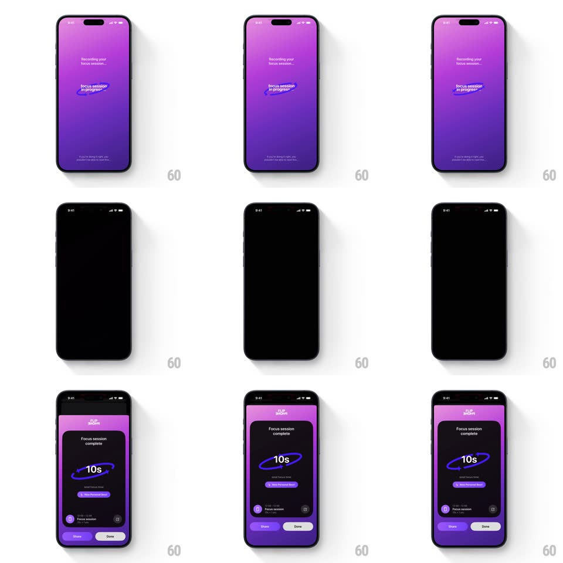

Media
Frame-by-frame

Rebuild this interaction 1:1: Flip Phone's focus session - the screen goes dark while the phone is face-down, and flipping it face-up slides the "Focus session complete" card up with spring physics.

Rebuild this interaction 1:1: Flip Phone's focus session - the screen goes dark while the phone is face-down, and flipping it face-up slides the "Focus session complete" card up with spring physics. ## Integration Integration: stack-agnostic spec - springs given as stiffness/damping, timed motions as duration + curve; map every value to your framework and animation library of choice. ## Scene Purple gradient session screen: "Recording your focus session" at top, the FLIP PHONE wordmark (rendered upside down while armed), a "focus session in progress" pill, and a hint line at the bottom. Flipped state: the screen is fully black. Complete state: a dark card holding "Focus session complete", the "10s" duration ring, a "View Personal Best" pill, the next-session row, and Share / Done buttons. ## Motion spec Pattern: slide-up completion card with spring physics on the face-up flip. - When the session arms, the wordmark flips upside down (rotate 180deg, 400ms, ease-in-out) - the visual cue to put the phone down. - Face-down: the screen fades to black (300ms) - a true blank, no ambient widget. - On the face-up flip (device orientation change), the black holds for a beat (150ms), then the completion card slides up from the bottom (translateY 100% -> 0, spring ~300/20, ~450ms, soft overshoot) over the re-fading purple gradient. - Card content staggers in after the slide starts: "Focus session complete" (200ms in), the "10s" ring draws its arc (500ms, clockwise), the Personal Best pill pops (spring ~420/16), Share/Done rise last (20px, 250ms). - The ring's number counts up to the session length (300ms rolling) as the arc draws. ## Calibration - The trigger is the physical flip - no button path to the completion card. - The upside-down wordmark is deliberate - it must read correctly when the phone is face-down and viewed from above the table edge... no: it reads flipped to the seated user, signaling hands-off. ## Reduced motion Card fades up (250ms) without spring; ring draws without the count. ## Don't miss - Share is the filled purple button, Done the quiet white one - sharing is the encouraged exit. - The black flipped state is total - even the status bar goes.